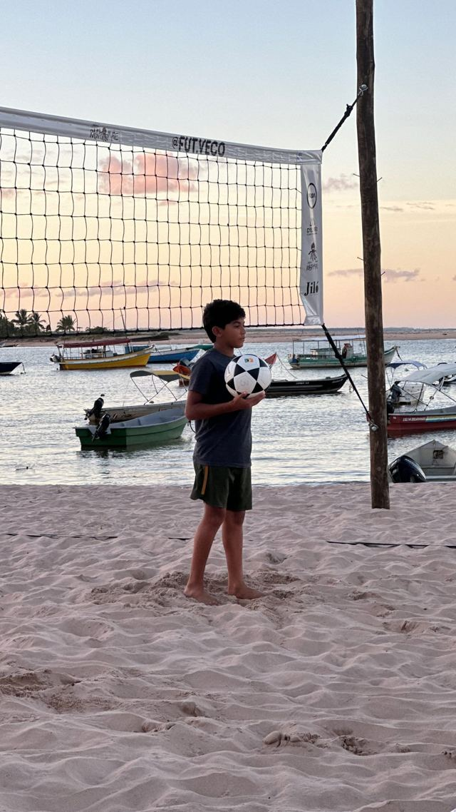
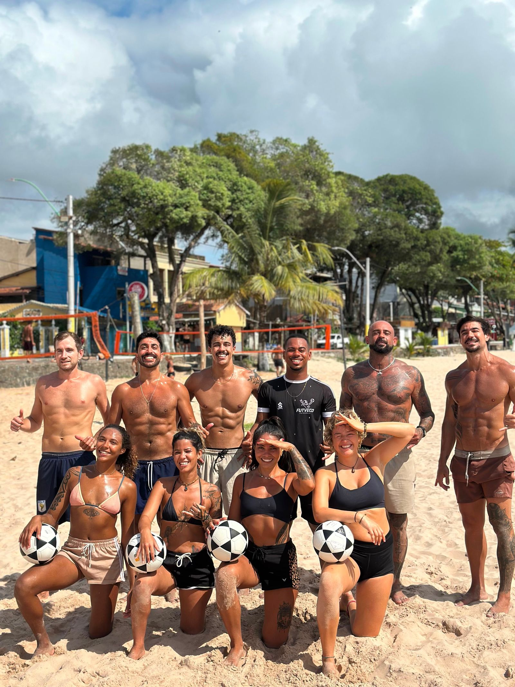
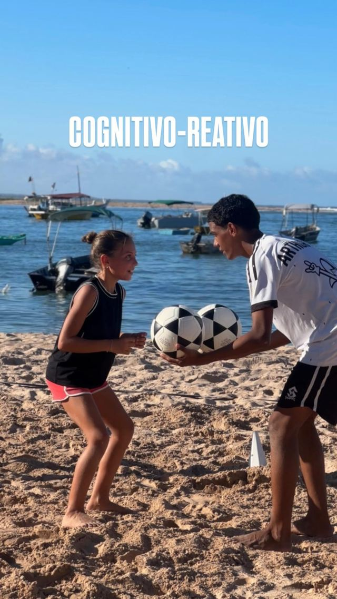
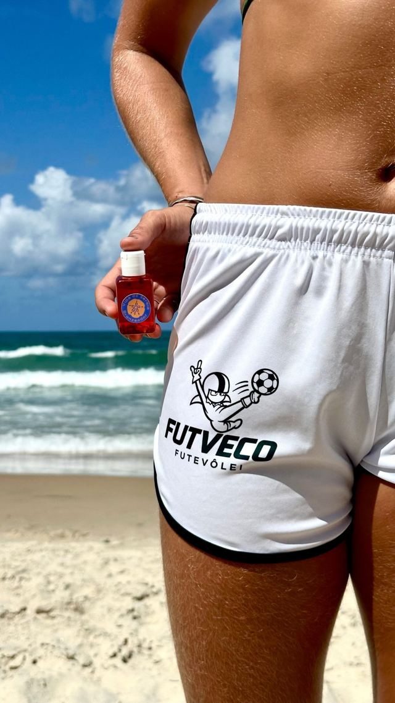
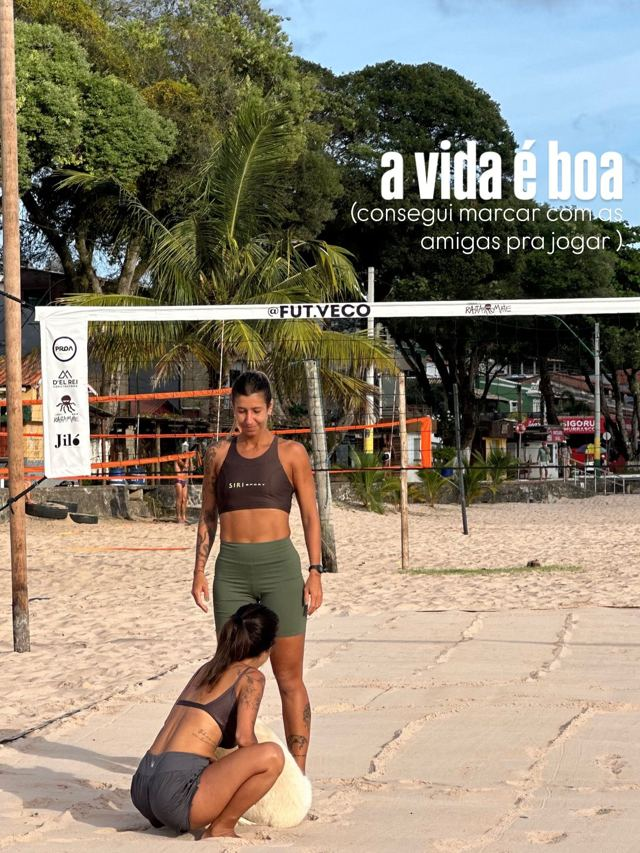
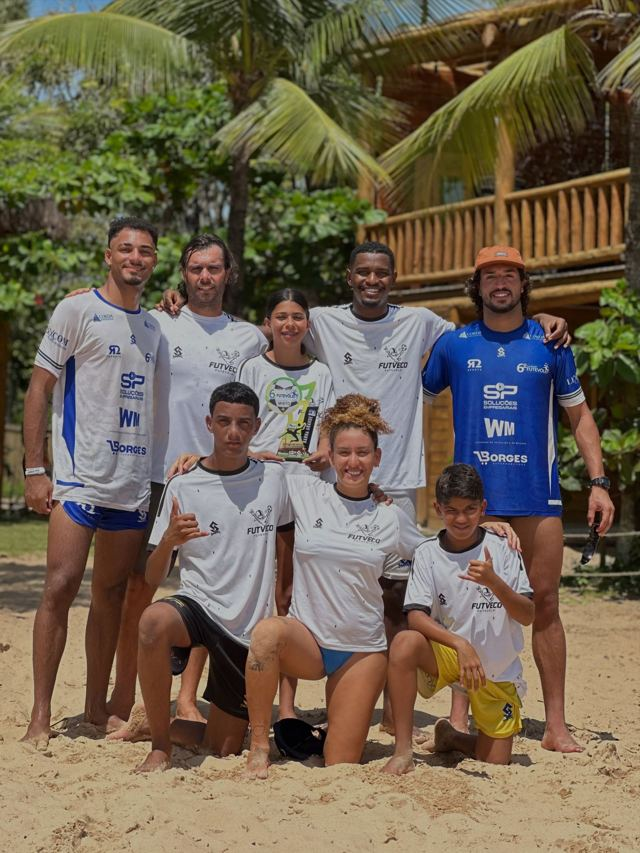
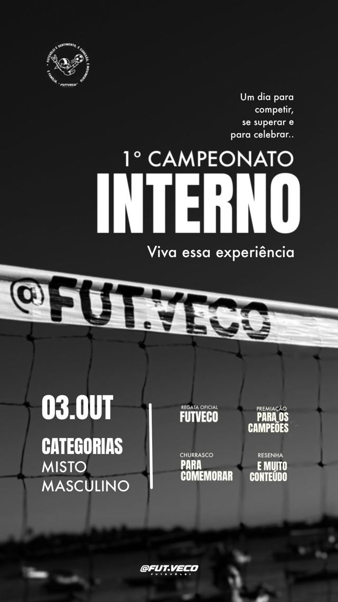
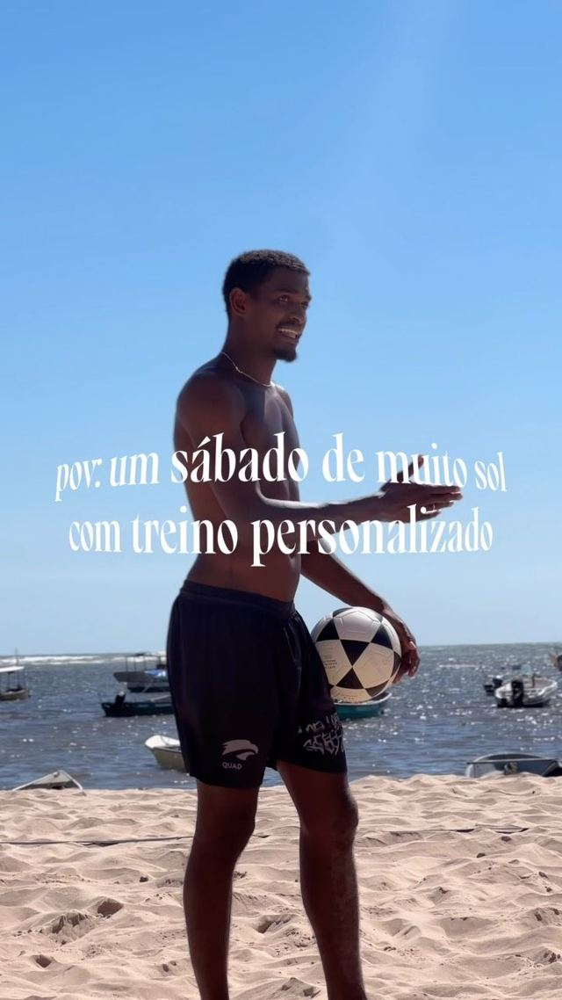
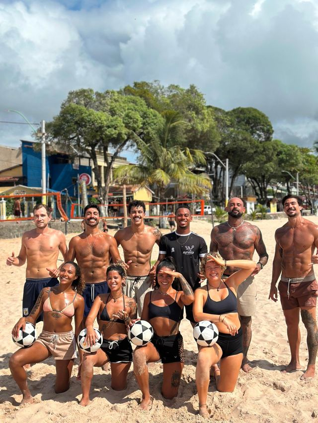

01
Futevôlei
Fundamentos, técnica, tática e condicionamento — com dicas e treinos para todos os níveis.

📍 Itacaré - BA · Esportes de Areia
aprenda • evolua • divirta-se
Sobre
A FUT.VECO é uma escola de futevôlei e altinha em Itacaré, Bahia. Aqui o lema é simples: aprenda, evolua e divirta-se — com treino para todos os níveis, do primeiro toque na bola ao campeonato.
Treinos de técnica, condicionamento e leitura de jogo (tem até treino cognitivo-reativo!), sempre com resenha boa e muita energia na areia.
🕒 Veja horários e local nos destaques do Instagram.


Modalidades

Fundamentos, técnica, tática e condicionamento — com dicas e treinos para todos os níveis.

A roda clássica da praia: controle de bola, toque refinado e muita diversão entre amigos.
Eventos & conquistas

Etapa da R2 Sports com alunos trazendo troféus para casa. Parabéns, time!

Disputa na areia do CT, uma experiência para viver junto com a família FUT.VECO.
Sintonia e energia em uma parceria que veste a areia.

Troca de experiências com @omer_sharvit_.

Com o prof. @jpzin__19 — e aula experimental para quem quis conhecer.
Galeria
Treino para todos os níveis. Chama no direct e venha jogar com a gente em Itacaré!